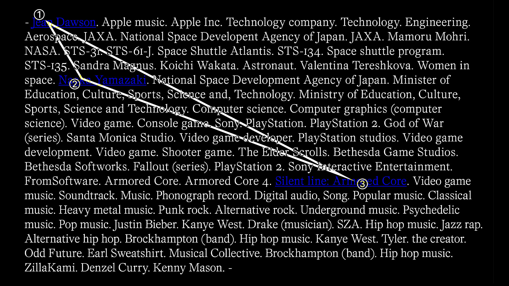

An Innefecient Triangle
2026
Poster 59.4x84.1 cm
Poster project based on a simple assignment: Make an inefficient triangle. Following these simple guidelines, I found inspiration in the concept of Wikipedia speedrunning, in which people race between 2 Wikipedia pages, only allowed to navigate via hyperlinks between pages. For my triangle, I manually chose 1 starting page and added 2 randomly selected other Wikipedia pages as the 3 points to build out the triangle. The lines connecting the triangle would then be built from all the pages visited in between. The poster itself features a list of all of the Wikipedia pages visited in the order they were navigated through, the end looping back to the first page.


